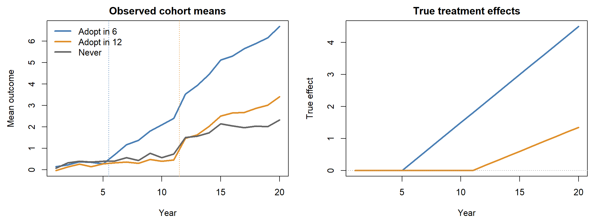
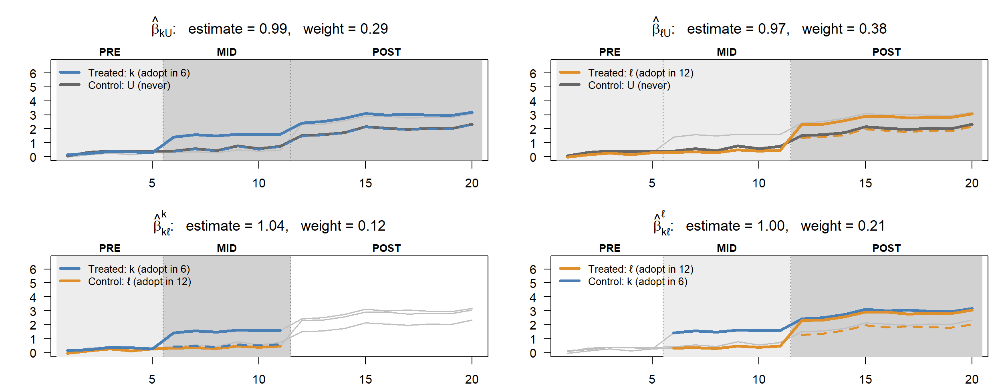
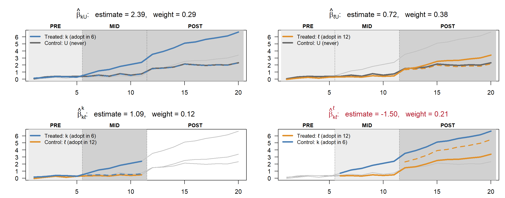
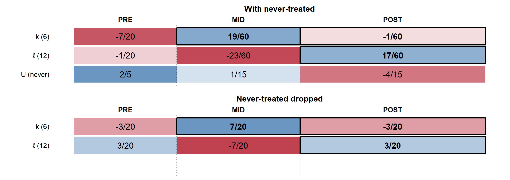
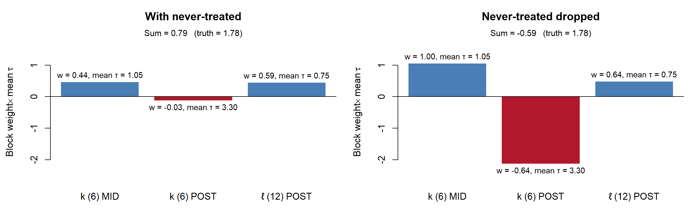
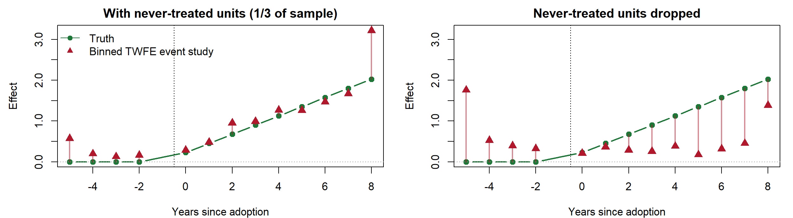
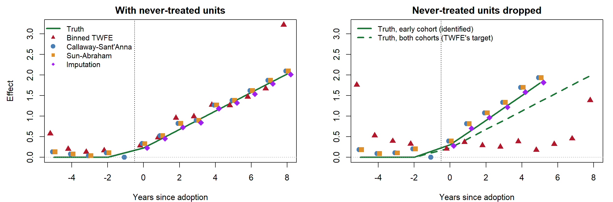

\(\hat\beta = (\bar Y_{11} - \bar Y_{10}) - (\bar Y_{01} - \bar Y_{00})\) in both. With more periods, an event study estimates one DiD per event time against a common reference period.
Overall, cohort, and event-time (\(e = t - g\)) effects are weighted averages of these.
2×2 analogue. One cohort, \(g = 1\); controls have \(G_i = \infty\). So \(Y(1) \to Y(g)\), \(Y(0) \to Y(\infty)\), and the 2×2 ATT is \(\text{ATT}(1,1)\).
Assumptions under staggered adoption
Parallel trends (never-treated version). For all \(g\) and \(t \geq 2\),
Parallel trends and no anticipation hold by construction. Effects grow with exposure and differ by cohort.
The simulated data

Part III: How TWFE fails
TWFE in the simulation
twfe <-feols(Y ~ D | unit + year, data = panel, cluster =~unit)c(TWFE =unname(coef(twfe)), true_ATT =mean(panel$tau[panel$D ==1]))
TWFE true_ATT
0.78496 1.78125
Less than half the true ATT. All effects are nonnegative, parallel trends holds exactly, and there is no confounding. The bias comes entirely from how TWFE combines comparisons.
Goodman-Bacon’s setup
Three timing groups: early \(k\), late \(\ell\), untreated \(U\). Group \(k\) is first treated in period \(k\). Their adoption dates cut the panel into three windows:
PRE(\(k\))
MID(\(k,\ell\))
POST(\(\ell\))
Periods
\(1, \dots, k-1\)
\(k, \dots, \ell-1\)
\(\ell, \dots, T\)
Early \(k\)
untreated
treated
treated
Late \(\ell\)
untreated
untreated
treated
Untreated \(U\)
untreated
untreated
untreated
\(\bar D_j\): share of the panel group \(j\) spends treated.
In the running simulation: \(k = 6\), \(\ell = 12\), \(T = 20\). PRE = 1–5, MID = 6–11, POST = 12–20.
The Goodman-Bacon decomposition
Each 2×2 uses two groups over two adjacent windows in which one group’s treatment switches on and the other’s does not.
Weights \(s \geq 0\) sum to one. Each is \(\propto\) (subsample size)² × variance of \(D\) within the subsample.
Why the forbidden comparison is forbidden
Add and subtract untreated outcomes (Goodman-Bacon eq. 14):
\[
\hat\beta^{2\times2,k}_{k\ell} \to \text{ATT}_k(\text{MID}) + \underbrace{\big[\text{trend in } Y(0)\text{: } k \text{ vs. } \ell\big]}_{0 \text{ under parallel trends}}
\]
\[
\hat\beta^{2\times2,\ell}_{k\ell} \to \text{ATT}_\ell(\text{POST}) + \underbrace{\big[\text{trend in } Y(0)\text{: } \ell \text{ vs. } k\big]}_{0 \text{ under parallel trends}} - \underbrace{\big[\text{ATT}_k(\text{POST}) - \text{ATT}_k(\text{MID})\big]}_{\text{change in } k\text{'s effect}}
\]
Both are 2×2s between the same two groups. Only the second uses a treated control, so it also subtracts the change in the control’s effect. Parallel trends does not remove this term. Growing effects push the estimate down, possibly below zero.
Where each 2×2 is estimated: constant effects

Effect fixed at 1; data otherwise unchanged. Every 2×2, forbidden included, is about 1; TWFE \(=\) 0.99. \(k\)’s effect does not change, so it is a harmless control. Light/dark shading: before/after windows. Dashed: counterfactual from the control’s change. The jump at year 12 is a common year shock, shared by \(U\), and removed by the year fixed effects.
Where each 2×2 is estimated: growing effects

Same data and weights; effects grow with exposure. In \(\hat\beta^{\ell}_{k\ell}\), \(k\)’s rise is its own treatment effect, not a failure of parallel trends in \(Y(0)\). The 2×2 reads it as \(\ell\)’s counterfactual trend.
Where the weights come from
The variance of \(D\) in a subsample is large when
the two groups are similar in size, and
treatment is on for about half the subsample’s periods (\(\bar D \approx 1/2\)).
So a group treated mid-panel gets the most weight, and groups treated near the start or end get little. They get more weight as controls than as treated groups.
Consequences:
Weights depend on when groups adopt, not just how many units they have.
Panel length alone changes the weights. Add periods to the end and later groups move toward the middle.
where \(\hat\varepsilon_{it}\) is the residual from regressing \(D_{it}\) on unit and period FEs.
Weights sum to one but can be negative.
\(\hat\varepsilon_{it} < 0\) for units treated many periods, in periods when most units are treated.
So \(\hat\beta\) can fall outside the range of the \(\tau_{it}\), with the wrong sign.
Denominator: one constant, the sum of \(\hat\varepsilon_{js}\) over all treated cells. It equals \(\sum_{j,s} \hat\varepsilon_{js}^2 > 0\) (FWL), so the sign of \(w_{it}\) is the sign of \(\hat\varepsilon_{it}\).
Residuals in the simulation

Residuals \(\hat\varepsilon_{it}\), constant within cohort × window. Outlined: treated. \(k\) in POST: \(\hat D = \tfrac34 + \tfrac23 - \tfrac25 = \tfrac{61}{60}\) with never-treated, \(\tfrac34 + 1 - \tfrac35 = \tfrac{23}{20}\) without. Never-treated units shrink the negative residual; they do not remove it.
Weights and contributions

Bars sum to TWFE (up to noise). With never-treated, \(k\)’s POST block, which holds the largest effects, gets weight -0.03: attenuation. Without, it gets -0.64: the sign flips.
Computing the weights
r <-resid(feols(D ~1| unit + year, data = panel))panel$w <-ifelse(panel$D ==1, r /sum(r[panel$D ==1]), 0)c(n_treated_cells =sum(panel$D), n_negative =sum(panel$w <0),sum_negative =round(sum(panel$w[panel$w <0]), 3),weighted_tau =round(sum(panel$w * panel$tau), 3), TWFE =round(unname(coef(twfe)), 3))
\(\sum w_{it}\tau_{it}\) reproduces TWFE up to noise. The early cohort’s late-panel cells have the largest effects and get negative weight.
Dynamic specifications are not immune
Adding leads and lags doesn’t fix it (Sun and Abraham 2021). With cohort heterogeneity,
\[
\beta_\ell = \underbrace{\sum_g \omega^{\ell}_{g,\ell}\, \text{CATT}_{g,\ell}}_{\text{own period}} \;+\; \underbrace{\sum_{\ell' \neq \ell} \sum_g \omega^{\ell}_{g,\ell'}\, \text{CATT}_{g,\ell'}}_{\text{contamination from other periods}}
\]
where \(\text{CATT}_{g,\ell}\) is cohort \(g\)’s effect \(\ell\) periods after adoption.
Contamination weights sum to zero across \(g\): they vanish only if cohorts share effect paths.
Binning or dropping relative periods adds more contamination.
Leads can be nonzero even under parallel trends.
Dynamic TWFE in the simulation
panel$rel <-ifelse(panel$G ==0, -1, pmin(pmax(panel$e, -5), 8)) # bin endpointses_twfe <-feols(Y ~i(rel, ref =-1) | unit + year, data = panel)truth <-c(setNames(rep(0, 4), -5:-2),tapply(panel$tau[panel$D ==1], panel$e[panel$D ==1], mean)[as.character(0:8)])

Left. A large never-treated group pins down the year effects. Close to the truth except at the binned endpoints, and much better than static TWFE (0.79 vs. 1.78).
Right. Drop the never-treated. Late year effects now come from treated units and absorb their growing effects: lags flatten, and the \(-5\) lead shows a spurious pre-trend. This is the usual case when everyone eventually adopts.
When TWFE is fine, and how to check
TWFE is fine with either:
No staggering: everyone adopts at once, or
Homogeneous effects across cohorts and exposure time. Rarely credible when effects accumulate.
Diagnostics:
bacondecomp::bacon(): weight on forbidden comparisons.
TwoWayFEWeights::twowayfeweights(): number and mass of negative weights.
Chiu, Lan, Liu, and Xu (2023): many published political science TWFE estimates change under robust estimators.
Part IV: Modern estimators
The common principle
Identification. Estimate each \(\text{ATT}(g,t)\) from clean comparisons only: units untreated in both periods. Already-treated units are never controls.
Aggregation. Combine with explicit, nonnegative weights.
base_period = "universal" uses \(g - 1\) throughout, so leads match TWFE leads. The default ("varying") uses \(t-1\) pre-treatment: short differences before, long differences after (Roth 2024).
Sun and Abraham (2021)
Interaction-weighted estimator: TWFE saturated in cohort × relative time, with a clean comparison group.
Two lines for the point estimate. Standard errors must account for estimating \(\hat Y(0)\): use didimputation (BJS) or did2s (Gardner).
Other estimators you will encounter
Stacked (Cengiz, Dube, Lindner, and Zipperer 2019). One dataset per adoption event with clean controls in a window; stack with event-specific FEs. Watch the implicit cross-event weights.
de Chaisemartin–D’Haultfœuille (\(\text{DID}_M\), DIDmultiplegtDYN). Switchers vs. stayers in adjacent periods. Allows switching on and off and non-binary treatment.
Local projections DiD (Dube, Girardi, Jordà, and Taylor 2023). One regression of \(Y_{i,t+h} - Y_{i,t-1}\) on adoption per horizon, clean controls only.
Factorial DiD (Xu, Zhao, and Ding 2024). A second factor, not treatment, varies across units.
Comparison
Estimator
Comparison units
Parallel trends required
Treatment reversal
R
TWFE
All, including already treated
All periods, plus homogeneous effects
Yes (but biased)
fixest::feols
Callaway–Sant’Anna
Never- or not-yet-treated
From \(g-1\) to \(t\)
No
did
Sun–Abraham
Never- or last-treated
All periods
No
fixest::sunab
Imputation (BJS, Gardner, FEct)
All untreated observations
All periods, including all pre-periods
FEct: yes
didimputation, did2s, fect
Stacked
Clean controls in window
Within event window
No
by hand
de Chaisemartin–D’Haultfœuille
Stayers in adjacent periods
Adjacent periods
Yes
DIDmultiplegtDYN
The robust estimators usually agree with each other and not with TWFE. When they disagree, parallel trends probably holds over some windows but not others.
estimator ATT
1 Truth 1.781
2 TWFE 0.785
3 Callaway-Sant'Anna 1.854
4 Sun-Abraham 1.854
5 Imputation 1.776
All estimators in the simulation: event study

Left. With clean controls, all agree except TWFE’s binned endpoints. Static TWFE (0.79 vs. 1.78) is the bigger failure here.
Right. Without never-treated units, the robust estimators report only what is identified (early cohort, event times 0–5) and get it right. TWFE reports every horizon and misses all of them by assuming homogeneous effects. SEs omitted.
Choices the robust estimators still require
Comparison group. Never-treated units may differ from adopters (why did they never adopt?). Not-yet-treated units may anticipate. The choice changes the assumption, not just precision.
Aggregation. Long horizons come only from early cohorts, so a rising path may be composition, not dynamics. Use a balanced window (balance_e in aggte).
Pre-periods. Imputation uses all; Callaway–Sant’Anna uses one. Disagreement tells you where parallel trends fails.
Event-study plots aren’t interchangeable (Roth 2024). Compare only with a common base period.
Part V: Sensitivity analysis
Pre-trends and sensitivity, revisited
From Lecture 8:
Pre-tests are weak. Low power, and conditioning on passing them worsens bias (Roth 2022). Equivalence tests flip the burden (Hartman and Hidalgo 2018).
Rambachan and Roth (2023). Bound the post-period violation by \(\bar M\) × the largest pre-period violation (relative magnitudes), or by \(M\) on changes in slope (smoothness). Report confidence sets over \(\bar M\) or \(M\) and the breakdown value.
Choose the restriction substantively. Shocks: relative magnitudes. Secular trends: smoothness.
Applying HonestDiD to a modern event study
Inputs: event-study coefficients and their covariance matrix, pre then post, reference period omitted.
Not a staggered TWFE event study: its coefficients are contaminated.
Use Callaway–Sant’Anna (dynamic), Sun–Abraham, or imputation. The vignette shows extraction from did.
With Callaway–Sant’Anna, set base_period = "universal" (Roth 2024).
Report the breakdown value for the average post-period effect, not just \(\ell = 0\).
Other robustness checks
Leave-one-cohort-out. Does one cohort drive the result?
Never- vs. not-yet-treated controls. Divergence suggests anticipation or selection into never adopting.
Placebos, functional form, covariates, inference. Lecture 8. Few treated clusters is a concern with few cohorts.
Part VI: Remarks
A workflow for staggered DiD
Estimand. Which ATT, which aggregation (overall, cohort, balanced event time)?
Timing. Never-treated units? Does treatment switch off?
Re-estimate with two or more robust estimators using different comparison groups or pre-periods.
Event studies with a common base period. Leads are diagnostics, not certification.
Sensitivity with HonestDiD; report the breakdown value.
Inference. Cluster at the assignment level; bootstrap with few treated clusters.
Problem Set 3: steps 1–6 on a published TWFE study.
Summary
DiD imputes the treated group’s untreated trend from a comparison group, under parallel trends and no anticipation.
TWFE = DiD in the 2×2 case. With staggered adoption and heterogeneous effects, it uses already-treated controls and can put negative weight on unit-period effects.
This is not confounding. It happens under exact parallel trends and can flip the sign.
Modern estimators: \(\text{ATT}(g,t)\) from clean comparisons, aggregated with nonnegative weights. They differ in comparison group and pre-periods used.
Passing a pre-test is weak evidence. Rambachan–Roth tells you how large a violation the result survives.
References
Borusyak, Jaravel, and Spiess (2024). Revisiting event-study designs: Robust and efficient estimation. Review of Economic Studies.
Callaway, Goodman-Bacon, and Sant’Anna (2024). Difference-in-differences with a continuous treatment.
Callaway and Sant’Anna (2021). Difference-in-differences with multiple time periods. Journal of Econometrics.
Cengiz, Dube, Lindner, and Zipperer (2019). The effect of minimum wages on low-wage jobs. Quarterly Journal of Economics.
Chiu, Lan, Liu, and Xu (2023). What to do (and not to do) with causal panel analysis under parallel trends.
de Chaisemartin and D’Haultfœuille (2020). Two-way fixed effects estimators with heterogeneous treatment effects. American Economic Review.
Dube, Girardi, Jordà, and Taylor (2023). A local projections approach to difference-in-differences.
Ferman and Pinto (2019). Inference in differences-in-differences with few treated groups and heteroskedasticity. Review of Economics and Statistics.
Gardner (2021). Two-stage differences in differences.
Goodman-Bacon (2021). Difference-in-differences with variation in treatment timing. Journal of Econometrics.
Hartman and Hidalgo (2018). An equivalence approach to balance and placebo tests. American Journal of Political Science.
Liu, Wang, and Xu (2024). A practical guide to counterfactual estimators for causal inference with time-series cross-sectional data. American Journal of Political Science.
References (cont.)
MacKinnon and Webb (2016). Difference-in-differences inference with few treated clusters.
Rambachan and Roth (2023). A more credible approach to parallel trends. Review of Economic Studies.
Roth (2022). Pretest with caution: Event-study estimates after testing for parallel trends. AER: Insights.
Roth (2024). Interpreting event-studies from recent difference-in-differences methods.
Roth and Sant’Anna (2023). When is parallel trends sensitive to functional form? Econometrica.
Roth, Sant’Anna, Bilinski, and Poe (2023). What’s trending in difference-in-differences? Journal of Econometrics.
Sant’Anna and Zhao (2020). Doubly robust difference-in-differences estimators. Journal of Econometrics.
Sun and Abraham (2021). Estimating dynamic treatment effects in event studies with heterogeneous treatment effects. Journal of Econometrics.
Wooldridge (2021). Two-way fixed effects, the two-way Mundlak regression, and difference-in-differences estimators.
Xu, Zhao, and Ding (2024). Factorial difference-in-differences.